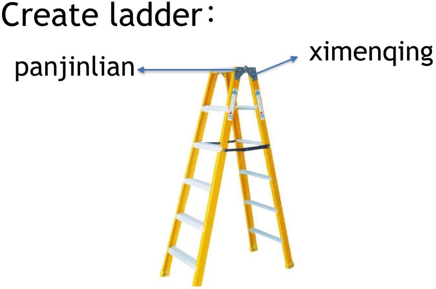
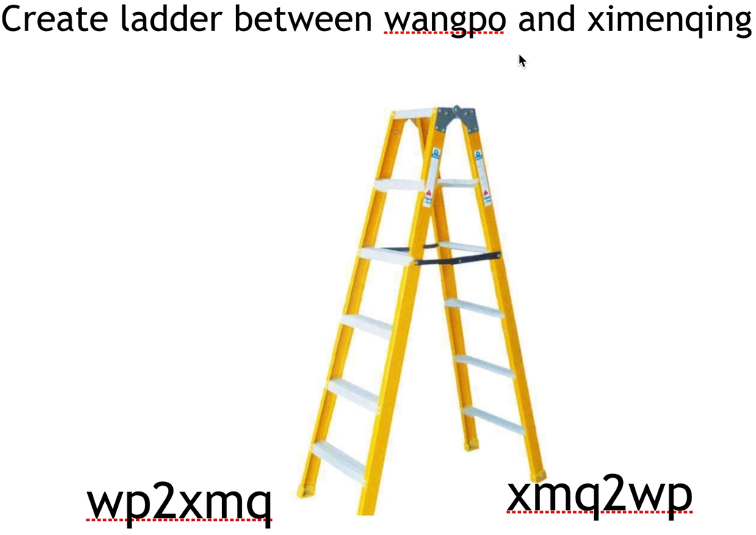
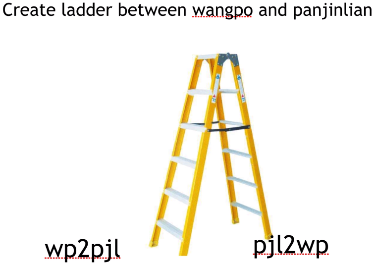

# 网卡，iptables, 路由表
网卡相当于整个计算机的网关，有唯一的 MAC 地址，用来识别计算机并用来跟其它计算机通信，网卡位于 OSI 七层模型的第二层链路层.
查看 iptables: $ iptables -nvL 用来查看流量经过网卡进入计算机后的流向，指定哪些端口服务.
查看路由表: $ route -n , 定义网络流量最终可以通过哪个网络设备出去.
# ping 和 traceroute 命令
操作网络 OSI 模型 2 层链路层网命令 ping, traceroute
//ping | |
$ ping -c 3 127.0.0.1 //ping 3次 环回地址 | |
$ ping -c 3 127.33.99.11 //环回地址不止是指127.0.0.1, 只要是以127开头的网段都可以. | |
// traceroute | |
$ yum install -y net-tools | |
$ yum install -y traceroute | |
$ traceroute 127.0.0.1 |
# ip 命令查看管理网络命名空间 (namespace)
ip 命令 是在 centos 7 引入进来的，基本不用以前的 ifconfig 命令.$ docker exec -it container cmd... docker 命令操作实际上是在 linux 的网络命名空间发展来的.$ kubectl exec -it pod -- cmd ... kubernetes 命令操作实际上也是在 linux 的网络命名空间发展来的.
linux 网络命名空间是属于 linux 内核的一个功能，必须要内核支持，docker 是在此基础上做了扩展和封装.
# ip 基本命令
$ ip netns add eden //添加Linux network namespace, 与宿主机的网络命名空间隔离 | |
$ ip netns ls //查看 | |
$ ip netns delete eden //删除 network namespace | |
$ ip netns add greenland |
进入新建的网络命名空间 (与 docker exec -it container cmd... 非常类似).
$ ip netns exec greenland bash // 进入网络命名空间, 但是用的User和主机提示符跟原来相同 | |
$ ip link //查看有什么设备 | |
$ ip addr //查看ip设备地址 | |
$ exit |
重命名网络命名空间的 User 和主机提示符
$ ip netns exec greenland bash -rcfile <(echo "PS1=\"greenland\"") // 修改User和主机提示符为greenland | |
greenland> ip link // 1. 查看网络设备是处于"state DOWN mode DEFAULT" | |
greenland> ping -c 3 127.0.0.1 // 2. 返回: connect: Network is unreachable | |
greenland> ip link set lo up // 3. 启用设备 | |
greenland> ip link // 4. 再次查看网络设备处于"up" | |
greenland> ping -c 3 127.8.8.8 // 5. 查看可以ping通了 | |
greenland> ip addr | |
greenland> route -n // 查看路由表 | |
greenland> iptables -nvL -t nat // 查看iptables | |
greenland> ifconfig // 返回没有内容因为设备都处于没有启动状态 | |
greenland> exit // 退出 |
不进入网络命名空间而直接执行新建的网络命名空间里的命令
$ ip netns exec greenland ip addr // 去掉bash, 不进入网络命名空间 |
# 实例：西门庆和潘金莲的私会
类比西门庆 (李瓶儿) 和潘金莲 (武大郎) 在各自家里 (network namespace) 通过连接打造好的相关联放在各自家里固定位置 (IP address) 的一半梯子 (跨 network namespace) 来互相访问

创建西门庆和潘金莲的家 (network namespace)
$ ip netns add ximenqing-ns
$ ip netns add panjinlian-ns
$ ip netns ls打造相关联的用来拼接梯子的两半梯子:
//veth 从名字上来看是 Virtual ETHernet (虚拟以太网) 的缩写，它的作用很简单，就是要把从一个 network namespace 发出的数据包转发到另一个 namespace。veth 设备是成对的，一个是 container 之中，另一个在 container 之外，即在真实机器上能看到的
$ ip link add ximenqing type veth peer name panjinlian
$ ip ls将打造好的两半梯子各自放到西门庆和潘金莲家里，在需要的时候再拿出来拼接，梯子状态是 down.
梯子放进西门庆和潘金莲家里后，宿主机 network namespace 里的 xinmenqing 和 panjinlian 桥 (网络设备) 就消失了.$ ip link set ximenqing netns ximenqing-ns // 把 ximenqing 这个梯子 (设备) 塞到 ximenqing 家里 (network namespace)
$ ip netns exec ximenqing ip link // 查看西门庆家中的设备
$ ip link set panjinlian netns panjinlian-ns // 把 ximenqing 这个梯子 (设备) 塞到 ximenqing 家里 (network namespace)
$ ip netns exec panjinlian ip link // 查看潘金莲家中的设备设定好各自一半梯子连接时候把梯子都放到各自家里确定位置，连接时候才能定位到确切位置 (设置好各自的 IP 地址)
$ ip netns exec ximenqing-ns ip addr add dev ximenqing 192.168.188.96/24 // 192 网段采用 24 子网掩码
$ ip netns exec ximenqing-ns ip addr // 查看梯子是否已固定好 (IP 已设定)
$ ip netns exec panjinlian-ns ip addr add dev panjinlian 192.168.188.69/24
$ ip netns exec panjinlian-ns ip addr梯子固定好位置后把 ximenqing 和 panjinlian 家的梯子都 up 起来，只 up 一家没用.
$ ip netns exec ximenqing-ns ip link set ximenqing up
$ ip netns exec ximenqing-ns ip addr // 可以查看到 ximenqing 这个网络设备状态是 "LOWERLAYERDOWN" 单方面起来了，因为还需要把它相关联的 panjinlian 的那一半梯子也起来.
$ ip netns exec panjinlian-ns ip link set ximenqing up
$ ip netns exec panjinlian-ns ip addr西门庆通过梯子去找潘金莲，或潘金莲通过梯子去找西门庆.
$ ip netns exec ximenqing-ns ping -c 3 192.168.188.69
$ ip netns exec panjinlian-ns ping -c 3 192.168.188.96
# 实例：王婆帮助西门庆和潘金莲私会
西门庆和潘金莲打造好的各自的一半梯子和王婆家里的桥对应的一半梯子相连，西门庆和潘金莲通过王婆家相连进行私会.


创建 wangpo 这家连接桥
$ ip link add wangpo type bridge // 创建 wangpo 这个桥，和 panjinlian-ns 和 ximenqing-ns 不一样
$ ip netns ls打造西门庆和王婆家的桥相关联的用来拼接的两半梯子:
$ ip link add wp2xmq type veth peer name xmq2wp
$ ip link // 查看创建好的西门庆到王婆家的一半梯子和王婆家到西门庆家的一半梯子
$ ip link add pjl2wp type veth peer name wp2pjl
$ ip link将打造好的四半梯子，一个放到西门庆家，一个放到潘金莲家，两个连接到王婆家的桥上两端.
$ ip link set xmq2wp netns ximenqing-ns //xiq2wp 这半桥塞到西门庆家里
$ ip netns exec ximenqing-ns ip link // 查看有没有塞进去
$ ip link set pjl2wp netns panjinlian-ns
$ ip netns exec panjinlian-ns ip link$ ip link set wp2xmq master wangpo //wp2xmq 这半桥连接王婆这个桥，还是可以在宿主机总 network namespace 看得到
$ ip link set wp2pjl master wangpo
$ ip link
$ bridge link // 查看王婆家刚添加的网络设备 wp2xmq, wp2pjl固定 (设立 ip address) 西门庆家的梯子，而不需要固定连接王婆家的那一半梯子
$ ip netns exec ximenqing-ns ip addr add dev xmq2wp 192.168.188.96/24
$ ip netns exec ximenqing-ns ip addr
$ ip netns exec panjinlian-ns ip addr add dev pjl2wp 192.168.188.69/24
$ ip netns exec panjinlian-ns ip addr把西门庆，潘金莲的梯子都 up 起来，也要 up 王婆家的桥
$ ip netns exec ximenqing-ns ip link set xmq2wp up //up 塞到西门庆家里的一半梯子
$ ip netns exec ximenqing-ns ip link
$ ip netns exec panjinlian-ns ip link set pjl2wp up //up 塞到潘金莲家里的一半梯子
$ ip netns exec panjinlian-ns ip link$ ip link set wangpo up //up 王婆家的桥
$ ip link set wp2xmq up //up 王婆家的桥连接西门庆家的梯子
$ ip link set wp2pjl up //up 王婆家的桥连接潘金莲家的梯子
$ bridge link // 查看连接王婆家桥的梯子是否 up王婆起到桥接作用 (虚拟网桥), 西门庆和潘金莲通过王婆家桥进行私会.
$ ip netns ximenqing-ns ping -c 3 192.168.188.69
$ ip netns panjinlian-ns ping -c 3 192.168.188.96